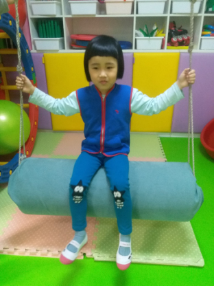

一心一益星星的孩子简介
二牛：

二牛的父母都是智力残疾，没有任何家庭收入，全凭二牛爷爷一人支撑全家的开销，2010年，二牛两岁，相比其他的孩子，他各方面发展都尤其缓慢。经过医院的检查，不幸的樊华被诊断为患有自闭症。
常语涵(女7岁，多重障碍）

语涵是一名自闭症小朋友，在三岁的时候发烧后引起无热抽，诊断癫痫。病情评估智力二级。
常语涵一家四口，爷爷以种地为生，一家人为了常语涵的康复，四处奔波，针灸、按摩，可以适用的方法都适用了，跑遍了大半个中国，花光了所有的积蓄，但小语涵的病情并没有得到很好的康复，没有语言交流，生活不能自理。
语涵父母文化水平有限，但为了语涵的康复，也倾尽了自己的所有，为了康复，语涵与父亲租住在学校附近，母亲则在北京房山上班。每个月学费及房租费，还有年迈的爷爷看病费用，让一家人十分窘迫。
在对语涵父亲的一次采访中，语涵爸爸的小小愿望“希望可以有机会一家人出去旅游一次”打动了很多人。
林芳仪：

芳仪出生在一个离异的家庭，因为重男轻女的思想，母亲独自一人带着姊妹四人在北京生活。三个姐姐都需要上学，所有的压力都放在了母亲一个人的肩上。即使生活压力如此巨大，但是芳仪的母亲从没有放弃过小芳仪的康复训练。每次见到他母亲，都会被她身上的坚强乐观所感染，她曾向青蚨一心一益关爱基金的工作人员表示，即使小芳仪的训练是一个持久战，但是只有坚持下去才会有希望。
功夫不负有心人，经过多年的康复训练，小芳仪可以仿说简单的短句。